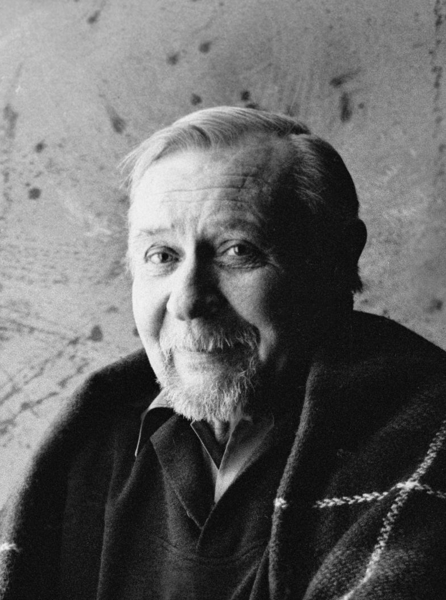
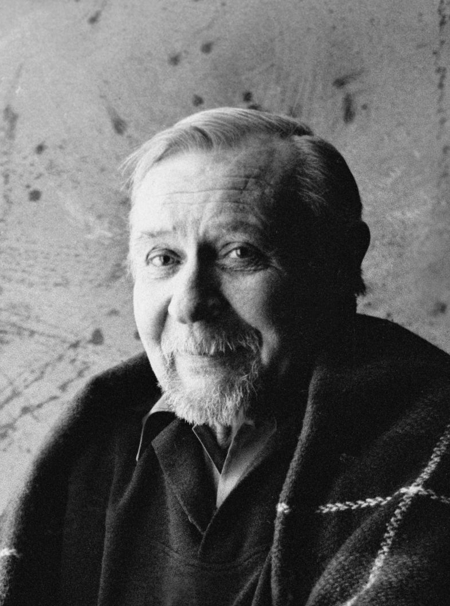
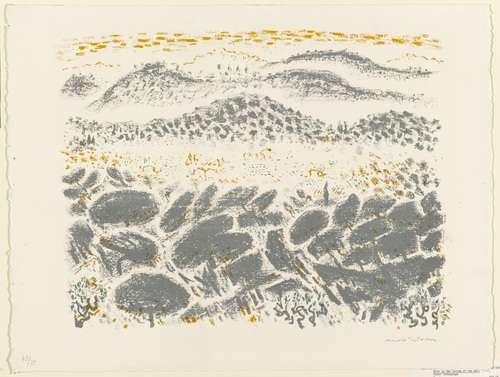
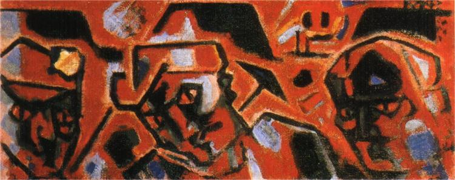
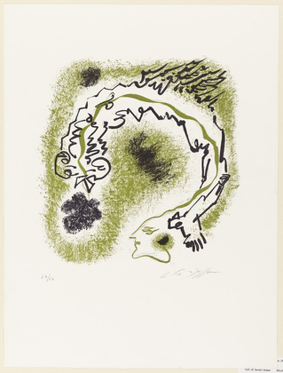
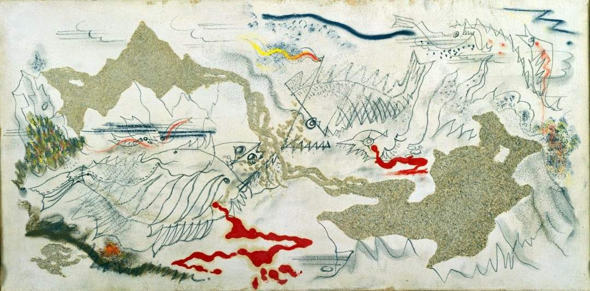
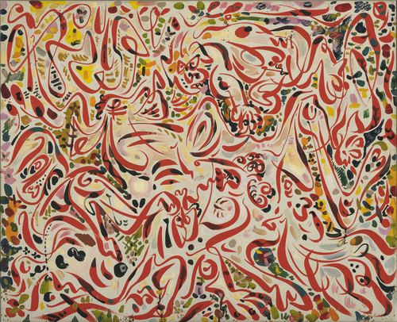
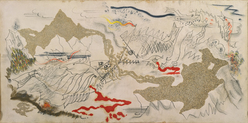
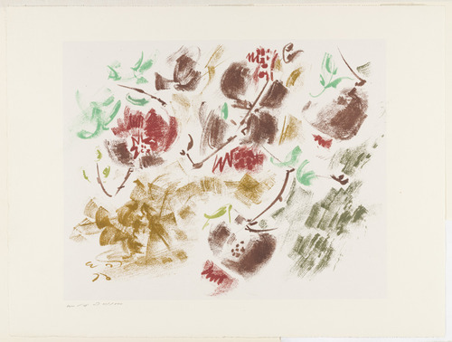
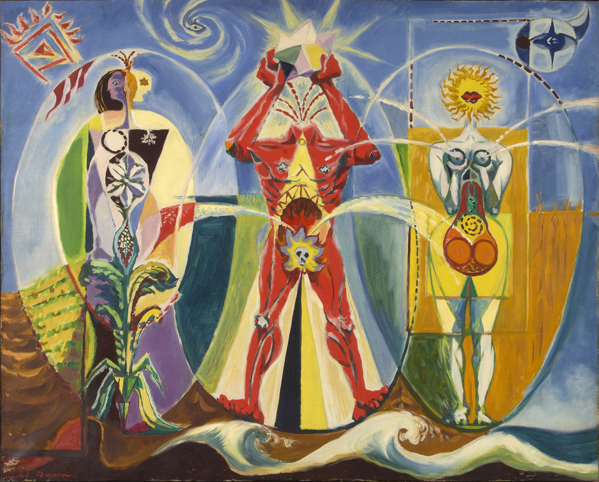

биография
Bажный художник круга французских сюрреалистов. В начале 1920-х он активно работает в технике автоматического рисования — на бумаге появляются образы напрямую из воображения художника. Вырос в Бельгии, он начал изучать изобразительное искусство в возрасте одиннадцати лет в Академии изящных искусств в Брюсселе под руководством Константа Монтальда, с 1912 обосновался в Париже, познакомился с Максом Жакобом. Работы Массона хранятся в крупнейших музеях, включая Музей Гуггенхейма в Нью-Йорке и Центр Помпиду в Париже.
творчество
В юные годы Массон увлекается импрессионизмом и символизмом, ар-нуво, модными идеями Ницше и Вагнера. В апреле 1919 года он отправился в город Сере на юго-западе Франции, где зародился кубизм. Там с 1905 года работали Андре Дерен, Пабло Пикассо, Хуан Грис и многие другие художники. В пейзажах, которые написаны Массоном в этот период, сильно чувствуется влияние Сезанна и Ван Гога. В других работах – влияние пост-кубизма.
!?...
 автоматический рисунок, символическая живопись 1961
В 1951 году Массон посещает Венецию. В результате серии поездок в Италию появился альбом цветных литографий «Путешествие в Венецию» (1952) и прекрасная серия итальянских пейзажей.
Влияние Массона чувствуется в творчестве Джексона Поллока и Аршиля Горького. Сам Массон в Америке увлекся китайским искусством, широко представленным в музее Метрополитен в Нью-Йорке и в музее Бостона, Массачусетс.
направления и жанры работ
Пробовал себя в различных направлениях и техниках: кубизм, сюрреализм, «автоматическая» живопись, абстрактный экспрессионизм, импрессионизм, символизм.
  